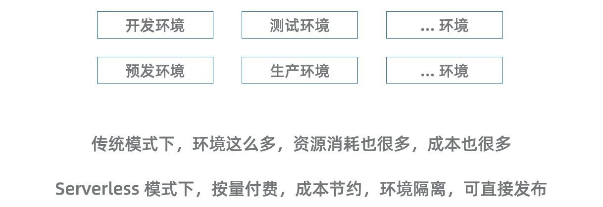
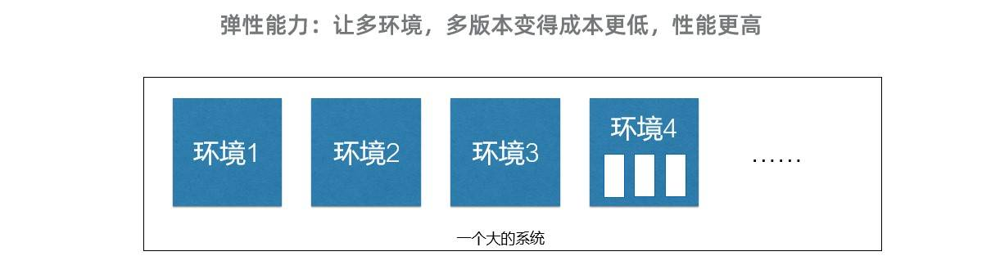

- 01 架构的演进.md.html
- 02 Serverless 的价值.md.html
- 03 常见 Serverless 架构模式.md.html
- 04 Serverless 技术选型.md.html
- 05 函数计算简介.md.html
- 06 函数计算是如何工作的？.md.html
- 07 函数粘合云服务提供端到端解决方案.md.html
- 08 函数计算的开发与配置.md.html
- 09 函数的调试与部署.md.html
- 10 自动化 CI&CD 与灰度发布.md.html
- 11 函数计算的可观测性.md.html
- 12 典型案例 1：函数计算在音视频场景实践.md.html
- 13 典型案例 3：十分钟搭建弹性可扩展的 Web API.md.html
- 14 Serverless Kubernetes 容器服务介绍.md.html
- 15 Serverless Kubernetes 应用部署及扩缩容.md.html
- 16 使用 Spot 低成本运行 Job 任务.md.html
- 17 低成本运行 Spark 数据计算.md.html
- 18 GPU 机器学习开箱即用.md.html
- 19 基于 Knative 低成本部署在线应用，灵活自动伸缩.md.html
- 20 快速构建 JenkinsGitlab 持续集成环境.md.html
- 21 在线应用的 Serverless 实践.md.html
- 22 通过 IDEMaven 部署 Serverless 应用实践.md.html
- 23 企业级 CICD 工具部署 Serverless 应用的落地实践.md.html
- 24 Serverless 应用如何管理日志&持久化数据.md.html
- 25 Serverless 应用引擎产品的流量负载均衡和路由策略配置实践.md.html
- 26 Spring CloudDubbo 应用无缝迁移到 Serverless 架构.md.html
- 27 SAE 应用分批发布与无损下线的最佳实践.md.html
- 28 如何通过压测工具+ SAE 弹性能力轻松应对大促.md.html
- 29 SAE 极致应用部署效率.md.html
10 自动化 CI&CD 与灰度发布
环境管理和自动化部署
当我们从传统开发迁移到 Serverless 下，对于环境和部署的管理思路也会有所不同。当用户转到 Serverless ，可以轻松地提供更多的环境，而这个好处常被忽略。

当我们开发项目时，通常需要一个生产环境，然后需要预发环境，还有一些测试环境。但通常每个环境都需要消耗资源和成本，以保持服务在线。而大多数时候非生产环境上的访问量非常少，为此付出大量的成本很不划算。
但是，在 Serverless 架构中，我们可以为每位开发人员提供一个准生产环境。做 CI/CD 的时候，可以为每个功能分支创建独立的演示环境。
当团队成员在开发功能或者修复 bug 时，想要预览新功能，就可以立即部署，而不需要在自己机器上模拟或者找其他同事协调测试环境的使用时间。
这一切都受益于 Serverless，我们不需要为空闲资源付费。当我们去部署那些基本没有访问量的环境时，成本是极低的。
由于部署新环境变得很容易，对于自动化部署的要求就变高了。当然无论是否采用 Serverless 架构，自动化部署都很重要。能否自动化地构建、部署和创建整个环境是判断开发团队优秀与否的重要因素。在 serverless 场景，这种能力尤为重要，因为只有这样才能充分利用平台的优势。
后面的课程我们会了解到，借助于函数计算平台提供的 Funcraft 工具，开发人员可以用从前做不到的方式在准生产环境中轻松部署和测试代码。
灰度发布
由于 Serverless 提供的弹性机制，没有访问量的时候能自动缩容到零，极大地节约了部署的多环境的成本。然而在同一套环境内的多个不同的版本也可以受益于这套机制。

传统应用虽然也支持在一个环境中并存多个版本，但相比于 Serverless 更加困难。首先每个版本都需要相对独立的运行环境，会消耗更多的资源。其次需要解决多个版本之间流量的分配问题。
在 FaaS 上这些问题已经被版本和别名机制完美的解决。由于没有流量就不消耗计算资源，所以发布一个版本的成本极低，每次发布都可以形成一个版本。然后通过别名进行版本的切换和流量分配。
基于 FaaS 的这套抽象，让灰度发布和 A/B 测试变得非常的简单。不再需要像 K8s 那样复杂的基础设置，开发者也能轻松地享受到平滑升级和快速验证的高级特性。
结语
Serverless 让开发和部署都变得更加的简单。希望您能继续探索其他 Serverless 和函数计算的内容，更多相关的资料可以访问函数计算的产品页 https://www.aliyun.com/product/fc